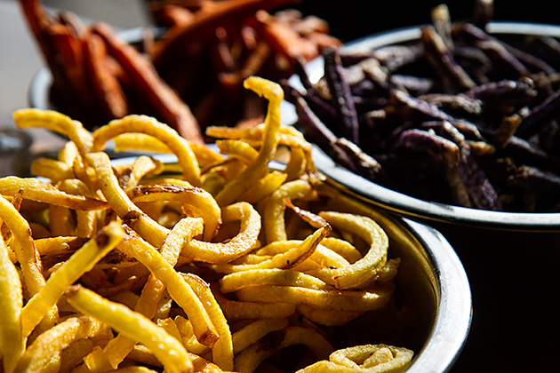
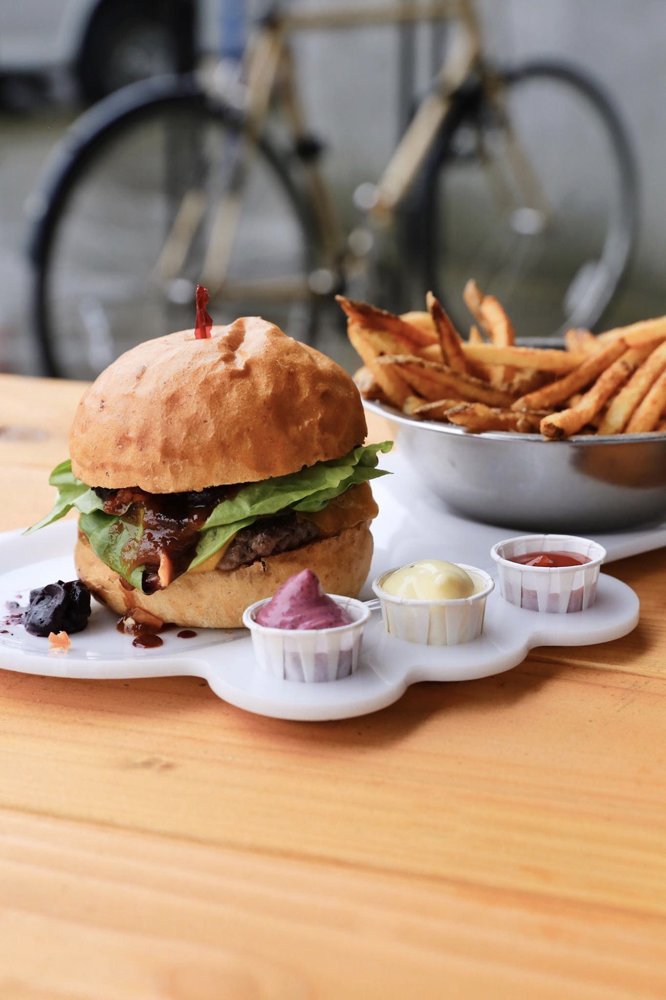

Welcome to the Rogers Best Burgers |
|
Rogers Best Burgers believes in farm to table products. We believe in giving people the experience of how things use to be. It is an experience like no others. Where you get highly styled photos of products from our competitors, we believe in giving you raw ingredients the honest truth. No filters. No BS. Just an experience that your great great great grandfather had to deal with as a pioneer. |
Shakes |
This milk shake is made with MILK, not ice cream! It's refreshing and healthy! Product Page |
Hot Chocolate
|
Hot chocolate, also known as drinking chocolate, cocoa, and as chocolate tea in Nigeria, is a heated drink consisting of shaved chocolate, melted chocolate or cocoa powder, heated milk or water, and usually a sweetener. Hot chocolate may be topped with whipped cream or marshmallows. Product Page |
Smoothie |
Spinach, kale, mango, pineapple, banana & fresh ginger (naturally sweetened) Product Page |
Bourgeois
|
Idaho Russet homestyle fries flash fried in duck fat, garnished with Italian black truffle salt. Product Page |
Roasted Brussels Sprouts
|
Fresh sprouts, fried, lightly salted and served with a side of house-made maple bacon jam. Product Page |
Fries |
All fries are cooked in Non GMO Sunflower oil. Depending on the day, your fries will be cut regular, homestyle, curly, po-ball, or shoestring. Our fries are served au natural and therefore do not keep their heat, or crispness as long as the typical fry. For best quality, please arrive as close as possible to your pick up time. Currently State Street out of Yams 4-1-20. Product Page |
BFC Original |
Spring mix, house-made garlic aioli, red onion gastrique, tomato. Product Page |
Classic
|
Crisp lettuce, tomato, red onion, house-made pickles and smoked special sauce. Product Page |
The BBQ |
Blue cheese coleslaw, house made chips, barbecue sauce Product Page |